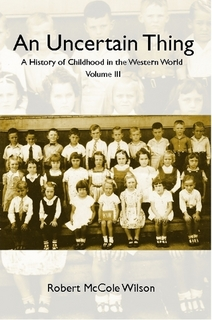
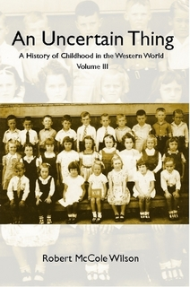

A Weekend Away
Ten years ago (well, ten years and ten days) Blake and I got married. Since we're still married we decided to celebrate by taking a grown-up holiday, a weekend away. Last Friday night we left the girls with Baba and Zaida and checked into the Novotel downtown. Our room was on the third floor, room 314, and it was a little disappointing, to be honest. A paltry selection of free toiletries, a teeny bathtub, and the best view of a gravel roof and building mechanics I, for one, have ever seen.
And also engineers. Undergrad engineers. The Novotel happened to be hosting the Organization of Professional Engineers Student Conference (or something) that very weekend. And most of them seemed to be on the third floor. We settled into our room just as the engineers were massing to go to dinner. Noisily. I called the front desk to ask whether there was perhaps a room on a different floor, a floor with fewer engineers.
They moved us up to the top floor, and in so doing, upgraded us to a deluxe room which satisfied many more of my hotel room desires: flat screen TV, schmancy bathroom, superfluous toiletries. The bathtub was still lame; I've realized that if you want a hotel with an awesome bathtub you need to go to a hotel which advertises their awesome bathtubs. And the view... well, it turns out the Novotel in Toronto doesn't have any good views. After settling in again, we went out for dinner and beer at C'Est What.
The next morning we availed ourselves of the breakfast buffet, another of my hotel must-haves. This one was exquisite: fresh, flaky pastries, assorted cereal, French toast, bacon, sausages (such good sausages!), ham, cheese, at least five kinds of bread, yogurt, fruit, coffee, tea, hot chocolate, chocolate milk, fruits. I was in breakfast heaven.
After eating about three breakfasts worth of breakfast, we waddled over to the St Lawrence Market to shop, window shop and sample things. I got some earrings, some strange grains, and gifts: genmaicha for Tanya and Douglas, and mince tarts for Andy.
Our next mission was to find a Shopper's Drug Mart, which you usually can't walk a block without stumbling over but were uncharacteristically thin on the ground over by the market there. So we carried on to the south end of Sherbourne and Toronto's newest waterfront delight, Sugar Beach. It was a gloomy day and we had the waterfront to ourselves as we walked back towards Yonge Street. We eventually wandered back to the hotel for an afternoon of lying around reading newspapers and books. Later we walked up to Dundas and over to Spadina for delicious Chinese food at E-Pan. (As it turns out the girls were having dinner just a block south of us.) We walked back to the St Lawrence Market area for uninspiring ice cream at Lettieri, then back to the hotel.
Sunday morning I woke up early and went down to the restaurant for a cappuccino while Blake slept in. Once he came downstairs we crossed the street to sit in the sun and wait for Scotland Yard to open for breakfast. An hour later we breakfasted in the company of some very vociferous football (soccer) fans. Then back to the hotel to check out, and we took the TTC home.
It was a lovely weekend but kind of ephemeral. I wish we had done something spectacular like go to a concert, but after paying for the hotel we didn't have the budget for any grand gestures. Still, it was lovely to spend time together without any pressing demands on our time.

 
